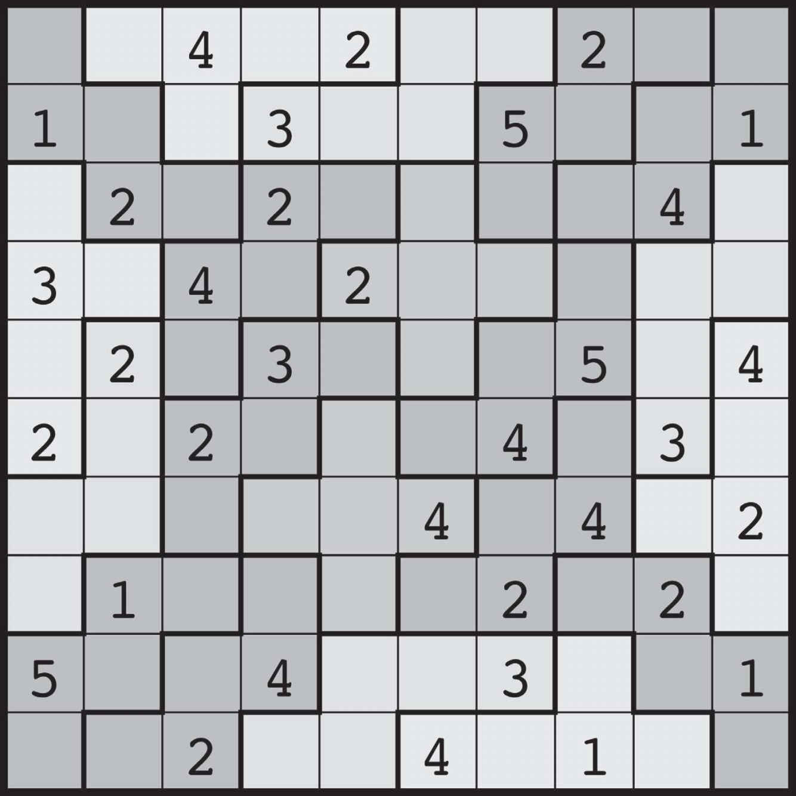

8 奋斗
无论是谁，只要他能够把掌握更多真理作为唯一的奋斗目标，能够全身心地投入其中，那么即使他的努力没有取得明显的成绩，他也一定可以提高自己把握真理的能力。
——西蒙娜·韦伊1
只有反复实践，才能做到完美。
——玛莎·葛兰姆
（Martha Graham）2
看着两个学生的论文，我心里一阵难受。无论是表现方式还是遣词造句，他们的论文看上去都极其相似，可我很确定他俩根本不认识对方。凭直觉，我在网上搜了一下我给他们布置的论题，果然发现了一篇疑似两份答案的模板的文章。
我该怎么办呢？我觉得，与其把他们叫来当面对质，不如给他们一个机会，让他们自己站出来。如果他们愿意为自己的行为负责，那我也愿意在大学司法委员会面前给他们求情，让他们少受点处罚。于是我给整个班级发了一封电子邮件，告诉学生我发现了利用网络资源作弊的案例，希望涉事学生可以主动站出来承认错误。
第二天早上，我惊讶地发现，邮箱里居然躺着 10 封坦白信，其中就包括我发现的那两个人。虽然我以前也曾听闻别的学校出现过重大舞弊事件，但这种事发生在自己的班级还是让我震惊不已。
到底是什么原因让这么多学生选择了作弊？有些人表示，为了取得漂亮的成绩，他们背负着巨大压力，因为他们想利用成绩得到同龄人和父母的认可，想利用成绩找到好工作，想利用成绩继续读研。甚至有个学生泪流满面地对我说：“我真的用心研究过这个论题！可是我被它搞得精疲力竭，而且我还有其他工作要做……所以我在网上查了答案。我不知道如果一直凭借自己的力量研究下去，究竟能不能得出答案。”令我难过的是，现在她永远都不会知道，自己到底能不能独自一人求出答案了。她曾试图消除心中的不安，但她的所作所为反而让这种不安变得更强烈了。
互联网是罪魁祸首吗？是，也不是。这种潜在的诱惑其实一直都在，互联网只不过提高了我们互相比较的能力，降低了放纵欲望的门槛——哪怕是某些不利于个人发展的欲望。20 年前，脸书尚未问世；而如今，随着社交媒体上各种信息分享行为的爆炸式增长，我们几乎只能看到其他人精挑细选后所展现出来的精致生活和各种成就，这更容易让人看到自己的不足。这种经由社会比较而产生的个人压力从未如此之大。此外，我们可以轻而易举地在互联网上找到任何数学问题的答案。我发现在某门高阶数学课程中，跟以前相比，向我请教某些最为困难的数学问题的学生人数越来越少了。现在这个年代想要不劳而获实在太容易了。
既然如此，我们为什么还要努力奋斗呢？奋斗的价值何在？人类内心深处怎么会对奋斗产生渴求呢？
奋斗分为两种，第一种奋斗指的是在痛苦与磨难中的斗争。在生活中，大多数人不会主动去追寻这种奋斗形式，因为我们不喜欢苦难。不过从某种程度上来说，苦难是人生经历的一种表现方式，很多令人刻骨铭心的经历都来自苦难，来自与挚爱之人携手面对困境的经历。亲身体验过苦难的人都知道，苦难使人坚韧，坚韧塑造品格，品格建立希望。无论是与疾病的斗争，还是与不公的斗争，都能助我们养成某些无法被病痛或暴力所剥夺的、对于幸福生活不可或缺的宝贵品格。不过话说回来，虽然这种奋斗形式极为常见，极为重要，但是人们内心深处对它并不存在什么渴求。
第二种奋斗指的是为了某个目标而做出的不懈努力。可是，什么才算是奋斗目标？如果取得好成绩就算是达成了目标，那我们根本不需要努力，只要作弊就行了。在《追寻美德》（After Virtue）一书中，哲学家阿拉斯戴尔·麦金太尔（Alasdair MacIntyre）对各种社会实践中的内在收益和外在收益做出了详细区分。根据麦金太尔的解释，大体上来说，实践指的是充满合作性与社会性的、具有恰当评判标准的人类活动形式，例如体育、农耕、建筑、数学、象棋。而外在收益指的是参加实践活动所得到的收益，但这种收益只能是来源于社会环境的意外收益，并非活动形式本身所带有的内在收益。例如，财富和社会地位就属于外在收益。此外，由于外在收益不是活动本身所固有的，这些收益总是具有很强的可替代性。麦金太尔用儿童下棋举了一个例子，为了激励儿童下棋，鼓励他们获胜，人们有时会用糖果作为奖励。
这样一来我们就可以鼓励孩子们下棋，激发他们的求胜欲望。但是，请注意，如果孩子们下棋只是为了拿到糖果，那他们就没有任何理由拒绝作弊。只要他们有这个条件，他们就一定会作弊。1
相对而言，内在收益指的是活动本身能够带来的、与该活动形式捆绑在一起的、只有亲自参与到实践当中才能获取的收益。只要你没有参加这种实践活动（或是类似活动），你就绝对无法获取相关收益。麦金太尔继续解释道：
因此我们希望，将来某一天，孩子们可以在具有鲜明个人风格的分析技巧、对弈策略、竞技实力中，获得某些象棋所特有的收益，找出自己继续下棋的全新理由。在这种理由的驱动下，下棋的目的将不再是于某些特定场合中取得胜利，而是尽己所能地在象棋之道上超越自我，探寻象棋的真谛。由此可见，如果孩子们现在就开始作弊，那么他们打败的绝不是对手，而是他们自己。2
显然，“战略想象力”就是一种内在收益。想要丰富自己的策略，你只能不断下棋，或者不断练习其他类似的项目。这种收益和活动本身紧密相连，同时也是参加活动的必然结果。
正如麦金太尔所言，外在收益（糖果、财富、声望等等）只能属于个人。通常情况下，某个人的收益越高，其他人的收益就越少。相比之下，内在收益（高超的技巧、活动的乐趣）可以属于多个个体，同时不会影响其他个体所能获取的数量。此外，内在收益还可以让参与活动的整个群体得到长足发展。个人所掌握的数学技巧可以让整个社会受益。你在数学方面的发现、统计学方面的见解，都有可能催生出可以惠及每一个人的实际应用。除此之外，数学中的每一条定理，每一个定义，每一种应用，都是全人类智慧的结晶，我们每个人都应该为此骄傲。
因此我认为，属于人类基本渴求的奋斗形式，事实上是为了获得内在收益而做出的奋斗——简单来讲，就是为了成长而做出的奋斗。每个人都会参加各种各样的社会实践活动，比如体育、工作，甚至友谊。无论在哪个领域，我们都有一个基本的渴求，那就是成长，因为我们想要在成长的过程中充分挖掘自己的潜力。我之所以会锻炼身体，是因为我想获取运动的内在收益，即匀称的身材、健康的体魄（如今这把年纪，我已经不怎么在意锻炼身体的外在收益了，比如大块的肌肉、他人的认可）。我认识的每一个人都渴望从事有意义的工作，这同样也是因为大家渴求在职业道路上有所发展，有所成长，在取得职业成就的同时获得自我满足感。此外，我们每个人都想要建立一份感情深厚、丰富多彩、认真且成熟的友谊，彼此相伴，一同成长。
为成长而奋斗，即以获取内在收益为目的的奋斗，是人类繁荣的标志。一个社会如果不以内在收益为目的去构建各种实践活动，这个社会一定缺少稳固的根基。例如，教育这种社会实践活动蕴含着大量内在收益，其中之一便是它可以培养人们的批判性思维。而权威形象则是教育的外在收益之一。然而，如果社会不鼓励批判性思维，那么那些通过各种手段建立起权威形象的人士，就可以肆无忌惮地发动政治宣传，散播虚假信息，这种情况下社会很容易产生动荡。此外，一个衰败的社会——充斥着各种不公、缺少发展机会、领导层严重腐败——会刺激人们通过不诚实的手段获取外在收益，因为大家一致认为领导层的分配方式有失公允。可是内在收益不一样，因为它内禀于社会实践活动本身，无法以欺诈的手段获取。追寻内在收益需要个体具有某些美德，反过来这个过程也可以培养某些美德。领悟到内在收益的宝贵价值以后，人们会将为成长而奋斗视为追求人生价值的途径，如果有人正处于不公正的制度当中，还会将其视为与不公现象做斗争的手段。
为成长而奋斗，其实也正是从事数学工作的魅力之一。数学探索者喜欢有趣的谜题、有难度的问题。我们很清楚“虽然内心知道希望渺茫，但仍旧心甘情愿地长期钻研某个问题”是一种什么样的感觉。我们早已学会享受奋斗，乐在其中。在数学研究中，我曾花费数年时间去思考某些问题。我自己也知道，有些难题我可能一辈子都解不开，就像生活中那些让人束手无策的困境一样。不过，水落石出、恍然大悟的那一刻，之前经历的种种磨难只会让胜利的果实更加甜蜜。
数学教育界有个词叫作“有效奋斗”，它指的是这样一种努力工作的状态：积极解决眼前问题，面对困难坚持不懈，愿意尝试各种策略，能够承担风险，无惧失误、不怕失败，在思考的过程中逐步提高对数学基础概念的理解。这种努力的过程可以锻炼我们的耐性，让我们在奋斗的时候能够乐在其中。更进一步地，这种耐性还可以帮我们养成临危不乱的品格，让我们更加从容地面对生活中的难题——我们会变得镇定自若，因为我们知道问题其实可以留到以后再解决。我们会发现，没有解决问题，其实和解决了问题同等重要——正如西蒙娜·韦伊所言，为了掌握真理而付出的心血与汗水，本身就难能可贵，因为就算没有取得明显的胜利果实，我们的能力也会得到锻炼和提高。比如，在奋斗的过程中，我们养成了妥善解决新问题的能力，增强了解决问题的信心与决心。通过奋斗获得成功的一刹那，我们会树立起强大的自信。随着时间的推移，我们将一次又一次地克服艰难险阻取得胜利。最终，无论面对何种难题，我们都会变得游刃有余。
我们收获的这些美德，全部来源于恰当的数学实践，属于那种更强调内在收益的实践，它们能够唤醒每个人内心深处对通过奋斗而成长的渴求。那么，为了提倡这种奋斗形式，为了让大家不再想尽办法利用某些手段规避奋斗过程，让大家不再屈服于外在收益的诱惑，数学探索者可以做些什么呢？
针对之前的舞弊事件，我反思良久，想到了一个重要的问题：造成这种局面，我自己是不是也应该承担某些责任？我开始感到失望，不是对学生，而是对自己。我是不是在无意中让学生觉得成绩比什么都重要？我是不是可以改进一下教学方式？
某项针对学术不端的研究指出，过去几年，作弊率一直呈上升趋势，其中科技进步是一个重要推力。3此外，家长和老师过分强调成绩的重要性，也是导致学生选择作弊的主要因素之一。如果老师更加看重学生的学术能力，让学生把内在价值当作学习目的，淡化卷面成绩这种外在形式，那么学生作弊的概率就会下降。这里我们再一次见证了出色的学习能力（内在收益）与漂亮的卷面分数（外在收益）之间的显著差异。
不知道大家注意到没有，就算我们再三强调学习能力的重要性，我们也会在某些微妙的细节上表现出对成绩和成就的重视。例如，无论是在家里还是在学校，我们都会思考，到底哪些人该受到表扬？哪些人会赢得大家的关注？如果我们更喜爱那些考试成绩为A的学生，而不是那些考试成绩为C的学生，便在无形当中把成绩表现看得比学习能力更重要。即便我们没有表现出这种偏好，学生们也会在社会生活中看到成绩的重要性，而且他们很容易将其过分夸大。我们必须行动起来，积极地去更正这种思想，不要让学生把考试成绩摆在至高无上的地位。
经历了舞弊事件以后，我现在会要求学生们阅读卡罗尔·德韦克（Carol Dweck）的一篇短文。根据短文提供的研究数据我们可以知道，有些人坚信个体的智力无法改变（固定型思维模式），有些人认为智力具有一定的可塑性和成长性（成长型思维模式），前者比后者更害怕挑战，更容易因挫折而气馁。4具有固定型思维模式的学生会觉得有天赋就意味着做事必然轻而易举，因此他们会把努力奋斗努力解题的过程看成是缺乏能力的表现。相比之下，具有成长型思维模式的学生会把各种挫折看成学习新知识的机会，认为只要坚持不懈、努力奋斗，这些挫折和困难其实完全可以克服。5
下面这三位菲尔兹奖得主都是成就斐然的数学思想家，他们一致认为奋斗过程在数学中具有重要价值：
我并不是一个才思敏捷的人，通常来说我必须花费很长时间才能整理好自己的思绪、取得一定进展。6
——玛丽安·米尔札哈尼
尽管已经意识到事情相当棘手，但还是想办法克服了困难，这种经历尤为重要。如果在很早的时候就养成了独立思考的习惯，树立起了不畏艰难的决心，将来面对困境时这些品格就可以发挥出超乎想象的作用。7
——蒂莫西·高尔斯（Timothy Gowers）
尽管我已经取得了一定成绩，但我其实一直不太清楚自己的智力水平到底是高还是低，我觉得自己并不聪明。无论是以前还是现在，我的思维一直都极其迟缓。我总是想要透彻地理解事物，所以我需要一定的时间去抓住事物本质。8
——洛朗·施瓦茨（Laurent Schwartz）
我不断提醒自己的学生，奋斗其实是好事，在奋斗的过程中我们可以学到很多东西：教授们在研究项目中一直在做的事情就是奋斗，奋斗是研究过程中最有意思的事情。此外我还会提醒他们，奋斗可以帮助大家养成很多优秀品格，无论在生活中遇到何种困境，这些品格都能帮助他们渡过难关，因为他们知道如何坚持不懈，如何克服困难，如何才能走到终点去摘取胜利的果实。最后我还会提醒他们，成绩只是一种衡量进步的手段，它无法保证你能够一直进步，也无法影响你作为一个人的尊严。
针对这些事情，我思考了很多。为了展现我对奋斗过程的重视程度，我开始调整自己对学生的评估方式。现在，即便学生没有完整地解决问题，只要他们能够向我证明为了解题他们已经想尽了办法，我就会酌情给他们一些分数。此外，为了表明我不仅看重解题结果，还珍视解题过程，我会不时地提出一些反思性问题，比如下面这个：
请详细描述一个你在课堂上学到的有趣的数学概念，解释它为什么有趣，并说说它在数学学习、数学创造方面能够给予你怎样的帮助，从而完成对整个学习过程的反思与总结。
学生们的回答常常让我倍感欣慰，比如下面这个：
在您的课堂上，我学到了很多很多有趣的东西。要说印象最深刻的，那应该是您给我们布置的“第 0 份”家庭作业。当时您让我们阅读一篇和“智力固化”相关的文章，作者表示，面临困境时，那些具有固定型思维模式的人会变得手足无措。……前一阵，我在数学方面遇到了很大的困扰，对自己的表现感到十分沮丧，整个人变得和文章中描述的一样。不过，文章还提到，面对困难时人们可以选择另一种态度，那就是承认努力和坚持是学习道路上不可或缺的一部分。尽管当时我并不完全认同这句话，但我觉得上个学期中我其实已经逐渐接受了这种思想。这对我来说是一个重要的教训，现在面对数学时我更有自信了。我明白了一个道理，那就是虽然数学的学习和创造需要一定的洞察力和灵感，但想要真正擅长数学，努力和汗水也是相当重要的部分。
最近我又向学生们提出了另一个问题：
互联网给人们提供了很多便捷，其中之一就是你几乎可以在网上找到任何问题的答案——只要它是一个已经被人们解决的问题。不过，在学习某个学科的时候，这种便利反而会带来一些负面影响。在这门课上，我一直在强调奋斗对于数学学习的重要性：它是一种正常行为，也是学习过程的一部分。学习遇到阻碍时，你不能坐以待毙，而是应该主动去“做点什么”。我的问题就是，在当前的学习进度下，你在本门课程中是否遇到了某些尤为珍贵的奋斗经验？你是否体验到了主动“做点什么”的意义？请举例说明。
下面这份回答来自某位重返大学校园的前海军陆战队队员：
我知道，亲身学习某些东西，本质上可能和学术之路上的奋斗过程是一回事。例如，我 10 岁的时候曾自学杂耍技巧，甚至玩得还挺不错。不过后来随着年龄的增长我发现杂耍并不酷，于是渐渐放弃了这门手艺。没想到，15 年后，我这门不为人知的手艺居然让我的妻子着实惊讶了一番。这时我才意识到，我没有丢失这项技能。同样，在海军陆战队服役的时候，我需要亲手或亲身学习各种战斗技巧。毫无疑问，我永远都忘不了部队中每一款机枪的拆卸组装方式。此外，这些年我一直在练习射击技巧，不出意外的话，我永远都会是一名射击高手，直到身体停止运转。
我发现数学教授们可以不费吹灰之力就解开黑板上的难题，哪怕他们早已忘记问题的标准答案。您也不例外，学生提出漂亮的问题时，您可以很轻松地解开，这种情况我见过好几次了。我认为，对您来说，做数学就好比在没有说明书的情况下修理汽车或是组装设备。您经历了太多的奋斗，之前的经验已经牢牢地刻在了脑海之中，忘掉它们变成了一件极为困难的事情。由此可见，您现在之所以如此擅长数学，是因为之前投入了大量的时间和汗水。
我希望在将来的某一天，我自己也能在某些学科上变得像您一样游刃有余。
既然他对奋斗价值的理解如此深刻，我相信他一定会梦想成真。
------五格骨牌数独------
下面这个不同寻常的数独游戏出自《难上加难的数独》（Double Trouble Sudoku）[1]一书中提到的游戏Brainfreeze Puzzles，作者是菲利普·赖利（Philip Riley）与劳拉·塔尔曼（Laura Taalman）。它肯定比普通的数独要难，你付出的努力肯定也会比往常要多。由于在每一行每一列，每个数字都会出现两次，所以普通数独的游戏技巧在这里完全不适用。
棋盘被加粗的黑线分割为很多区域，每个区域都包含 5 个方块（即五格骨牌）。游戏的目标是在每个方块中填入 1~5 当中的某个数字，填数时要遵循以下规则：
（1）每个五格骨牌当中，数字 1~5 必须全部各出现一次。
（2）每一行每一列，1~5 当中的每个数字都刚好出现两次。
需要注意的是，图中深浅不一的阴影只是为了标记具有相同形状的五格骨牌，没有其他特殊含义。

弗朗西斯先生，您好：
……
至于说我为什么会被数学吸引，我觉得是因为它蕴含的力量、结构以及真理。就我个人而言，我从未见过有哪种论证方法可以和数学论证相媲美（无论是哲学论证还是法学论证，抑或是其他的论证方式）。数学的结构也令人啧啧称奇，只要方法合理有效，那么无论你采取哪种方法，都会推出一模一样的结论，仅这一点就足以令人折服。此外，数学中的真理也同样令人惊叹，具体表现在它描述物理世界的方式，以及它似乎无处不在的广泛应用。对于数学的力量，我想到了一个很有说服力的例子：在“现实物理学”出现之前，“数学物理学”就已经发现了宇宙中绝大多数的事物。
克里斯
2018 年 8 月 9 日
[1]Philip Riley and Laura Taalman, Brainfreeze Puzzles, Double Trouble Sudoku (New York: Puzzlewright, 2014), 189.